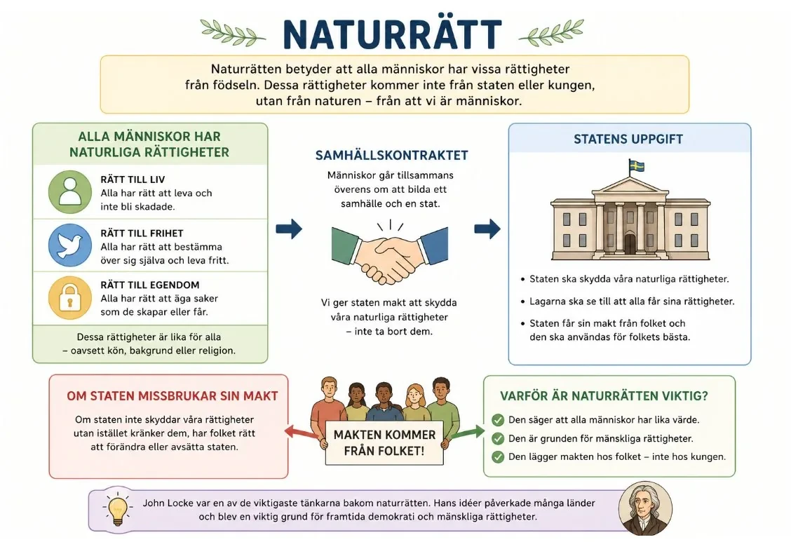
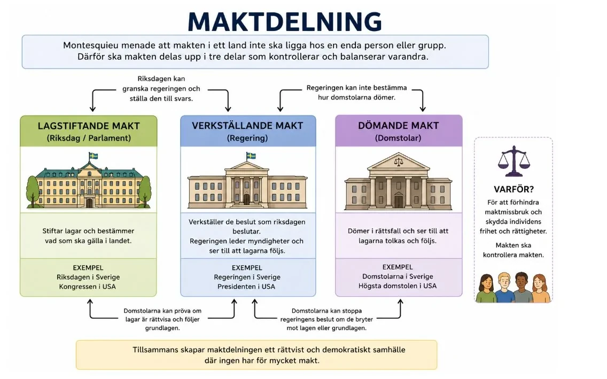
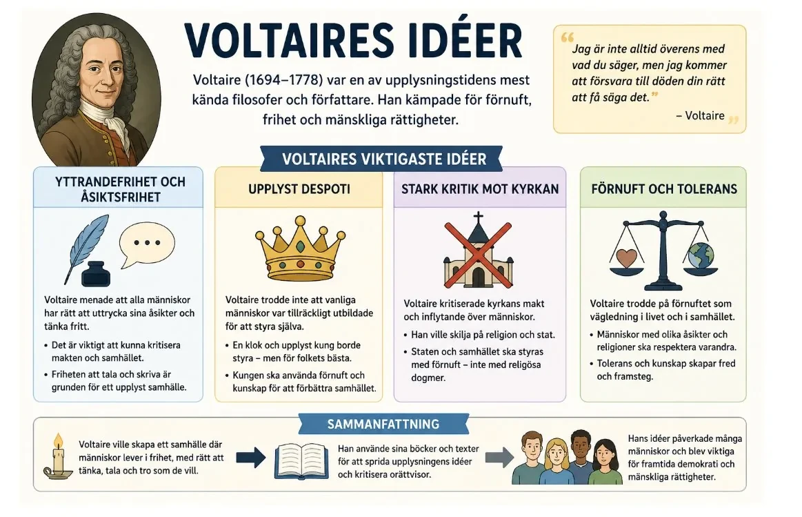
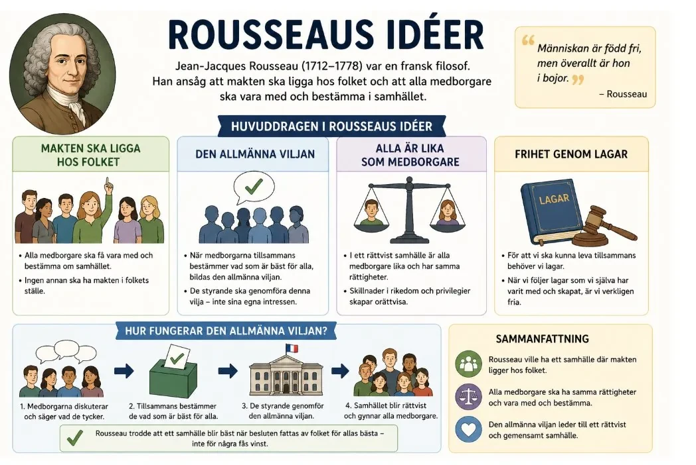

— förnuftet vänds mot den gamla ordningen —
Under 1600- och 1700-talet växte ett nytt sätt att tänka fram i Europa: människan skulle använda sitt förnuft i stället för att lyda kyrka, kung och tradition. I det här avsnittet möter du först den gamla ordningen och de bärande idéerna, och sedan fyra tänkare — Locke, Montesquieu, Voltaire, Rousseau och Wollstonecraft — som vände förnuftet mot makten själv.
Under 1600- och 1700-talet började många människor i Europa tänka på ett nytt sätt om världen och samhället. Denna period kallas upplysningen. Upplysningens tänkare ville inte bara acceptera gamla förklaringar därför att kyrkan, kungen eller traditionen sa att det var så. I stället menade de att människor skulle använda sitt förnuft, alltså sin förmåga att tänka, undersöka och dra slutsatser.
Före upplysningen var Europa ofta präglat av ståndssamhälle, envälde och kyrkans starka makt. I ett ståndssamhälle föddes människor in i olika grupper, till exempel adel, präster, borgare och bönder. Vilka rättigheter och möjligheter man hade berodde mycket på vilken familj man föddes i. Detta kallas också ett bördssamhälle. Upplysningsfilosoferna kritiserade detta. De menade att samhället inte borde bygga på börd och privilegier, utan på lagar, kunskap och rättigheter.
En viktig tanke under upplysningen var att kunskap kan göra samhället bättre. Genom vetenskap, observationer och utbildning kunde människor förstå världen bättre och lösa problem. Denna idé hänger ihop med empirismen, som betyder att kunskap bygger på erfarenhet och undersökningar. I stället för att bara tro på gamla auktoriteter skulle människor undersöka, jämföra och tänka själva.
Detta ledde också till framstegstanken. Framstegstanken innebär att samhället kan utvecklas och förbättras över tid. Människor är inte låsta vid den plats de föds på, utan kan genom utbildning, arbete och kunskap förändra sina liv. På så sätt började man tänka mer på individens möjligheter. Det blev ett steg bort från ståndssamhället och ett steg mot ett mer modernt samhälle, där det man kan och gör blir viktigare än vilken familj man kommer ifrån.
Under 1600- och 1700-talet började många människor i Europa tänka på ett nytt sätt om världen och samhället. Denna period kallas upplysningen. Upplysningens tänkare ville inte bara acceptera gamla förklaringar därför att kyrkan, kungen eller traditionen sa att det var så. I stället menade de att människor skulle använda sitt förnuft, alltså sin förmåga att tänka, undersöka och dra slutsatser.
Före upplysningen var Europa ofta präglat av ståndssamhälle, envälde och kyrkans starka makt. I ett ståndssamhälle föddes människor in i olika grupper, till exempel adel, präster, borgare och bönder. Vilka rättigheter och möjligheter man hade berodde mycket på vilken familj man föddes i. Detta kallas också ett bördssamhälle. Upplysningsfilosoferna kritiserade detta. De menade att samhället inte borde bygga på börd och privilegier, utan på lagar, kunskap och rättigheter.
En viktig tanke under upplysningen var att kunskap kunde göra samhället bättre. Många upplysningsfilosofer menade att människor inte bara skulle acceptera gamla sanningar, traditioner eller auktoriteter. I stället skulle man använda sitt förnuft, undersöka världen och pröva idéer mot verkligheten. Vetenskap, observationer och utbildning sågs därför som viktiga redskap för att förstå världen och lösa samhällsproblem.
Denna tanke hänger ihop med empirismen. Empirism betyder att kunskap bygger på erfarenhet, observationer och undersökningar. Man ska alltså inte bara tro på något därför att en kung, kyrka eller gammal auktoritet säger att det är sant. I stället ska människor undersöka, jämföra och dra slutsatser själva. Det var ett nytt sätt att tänka som utmanade äldre samhällen där tradition, religion och makt ofta avgjorde vad som räknades som sanning.
Upplysningens tro på kunskap ledde också till framstegstanken. Framstegstanken innebär att samhället kan utvecklas och förbättras över tid. Genom utbildning, vetenskap, reformer och bättre lagar kunde människor skapa ett mer rättvist och fungerande samhälle. Detta var en viktig skillnad mot äldre sätt att tänka, där många såg samhället som något ganska fast och oföränderligt.
Framstegstanken påverkade också synen på individen. Människor började i högre grad ses som personer med möjligheter att utvecklas. En människa behövde inte bara definieras av vilken familj eller vilket stånd hon föddes in i. Genom utbildning, arbete och kunskap kunde individen förändra sitt liv. På så sätt blev upplysningen ett steg bort från ståndssamhället och ett steg mot ett mer modernt samhälle, där människors kunskaper, handlingar och rättigheter blev viktigare än deras ursprung.
För att förstå varför upplysningen blev så omvälvande måste vi först ta den gamla ordningen på allvar. Det är lätt att avfärda 1600- och 1700-talets samhälle som bara "orättvist", men då missar man poängen. Det var ett genomtänkt system som vilade på tre pelare som bar upp varandra — och för de flesta människor framstod det inte som en tillfällig orättvisa, utan som världens naturliga ordning.
Ståndssamhället — född till sin plats. I ett ståndssamhälle avgjorde födseln nästan allt. Man föddes in i ett stånd — adel, präster, borgare eller bönder — och det bestämde vilka rättigheter, skyldigheter och möjligheter man hade genom hela livet. En adelsman var befriad från många skatter, kunde inneha höga ämbeten och dömdes ibland enligt egna regler; en bonde betalade, arbetade och lydde. Detta var inte bara sedvänja, utan ofta inskrivet i lagen. Att röra sig mellan stånden var i praktiken nästan omöjligt. Bakom detta låg en världsbild där varje människa och varje grupp hade en förutbestämd plats i en ordning som Gud själv antogs ha skapat — från kungen högst upp till den fattigaste längst ner. Ojämlikheten var alltså inte ett fel i systemet; den var systemet.
Enväldet — makten från Gud. Ovanpå ståndssamhället vilade ofta enväldet. En enväldig kung samlade nästan all makt hos sig själv: han stiftade lagar, styrde landet, ledde armén och stod över domstolarna. Den franske kungen Ludvig XIV brukar tas som exempel — "Solkungen", som enligt traditionen ska ha sagt att han var staten. Det avgörande var motiveringen: kungen ansågs härska "av Guds nåde". Hans makt kom inte från folket och behövde inte deras samtycke, utan var en gåva från Gud. Det gjorde kungamakten svår att ifrågasätta på ett djupare plan — att kritisera kungen var i förlängningen att sätta sig upp mot Guds egen ordning.
Kyrkans makt — sanningens väktare. Den tredje pelaren var kyrkan, och dess makt var större än bara det religiösa. Kyrkan påverkade utbildning, moral och hela synen på världen, och den avgjorde i hög grad vad som fick räknas som sant. Böcker kunde förbjudas, och den som spred "farliga" idéer kunde straffas. De tre pelarna höll ihop varandra: kyrkan gav kungen legitimitet, kungen skyddade kyrkan, och båda vilade på tanken att samhällets ordning var bestämd av börd och tradition snarare än av människors egna beslut.
Varför ordningen kändes evig. Det som gjorde systemet så starkt var att det uppfattades som fast och oföränderligt. Världen var som den var därför att Gud hade gjort den så, och människans uppgift var främst att foga sig och uthärda, inte att förbättra. Tradition räknades som ett argument i sig: att något alltid hade varit på ett visst sätt var skäl nog att det skulle förbli så. I en sådan värld var förändring inte ett hopp om något bättre, utan snarare ett hot om oordning.
Den intellektuella jordbävningen. Det var mot den här bakgrunden som ett nytt sätt att tänka bröt fram — och det gjorde det inte ur tomma intet. Under 1500- och 1600-talen hade den vetenskapliga revolutionen visat något oroande för den gamla ordningen: tänkare som Galilei och Newton kom längre genom att mäta och observera verkligheten än genom att slå upp svaren hos antika auktoriteter. Boktryckarkonsten spred nya idéer snabbare än någon kunde kontrollera, och en växande, läskunnig borgarklass hade allt mindre att vinna på ett system byggt på adelns börd. Ur detta formulerades tre bärande tankar. Förnuftet blev en metod: människan skulle tänka själv och pröva idéer, inte lyda. Empirismen hävdade att kunskap byggs på erfarenhet och undersökning — hos Francis Bacon som en systematisk metod, hos John Locke i bilden av medvetandet som ett oskrivet blad som fylls av erfarenhet. Och framstegstanken slog fast att kunskap samlas och växer — och att samhället därför kan förbättras över tid.
Kollisionen. Var för sig kunde dessa idéer verka ofarliga, nästan akademiska. Tillsammans var de sprängstoff, för de underminerade var och en av de tre pelarna. Om sanningen kan nås genom förnuft och observation, förlorar kyrkan sitt monopol på vad som är sant. Om makten måste kunna försvaras inför förnuftet, faller tanken att kungen härskar oantastligt av Guds nåde — nu kan man fråga varför han ska ha makten. Och om människan formas av utbildning och erfarenhet snarare än av sin börd, då rämnar hela ståndssamhällets logik: varför ska den som föds till bonde med nödvändighet förbli bonde? Framstegstanken gjorde dessutom något subtilt men avgörande — den förvandlade den "eviga" ordningen till ett val. Om samhället kan göras bättre, då är det inte längre en gudagiven nödvändighet att uthärda, utan ett problem att lösa.
Spänningen som förs vidare. Men redan här fanns en inbyggd motsägelse som upplysningens tänkare skulle brottas med. Om förnuftet är något alla människor har, borde i princip alla få tänka själva och delta — en djupt jämlik tanke. Ändå drog filosoferna mycket olika slutsatser om vem som egentligen var mogen för det, och vissa grupper — inte minst kvinnor — lämnades utanför det "allmänna" förnuftet. Det är den spänningen, mellan förnuftets löfte om jämlikhet och verklighetens gränser, som resten av avsnittet kretsar kring. För när människor väl hade accepterat att sanningen måste svara inför förnuftet, var steget inte långt till att ställa samma krav på makten själv. Det är precis vad tänkarna du möter härnäst — Locke, Montesquieu, Voltaire och Rousseau — kommer att göra.
Flera upplysningsfilosofer blev särskilt viktiga. John Locke skrev om naturrätten. Han menade att alla människor föds med vissa grundläggande rättigheter, till exempel rätten till liv, frihet och egendom. Dessa rättigheter kommer inte från kungen eller staten, utan tillhör människan därför att hon är människa. Statens viktigaste uppgift är därför att skydda människors rättigheter.
Locke skrev också om samhällskontraktet. Det betyder att människor går med på att leva i ett samhälle med lagar och en stat, eftersom staten ska skapa trygghet och skydd. Men staten får sin makt från folket. Om de styrande missbrukar sin makt och inte skyddar människors rättigheter, har folket rätt att protestera och förändra styret.

En av de viktigaste upplysningsfilosoferna var John Locke. Han skrev om naturrätten, alltså tanken att alla människor föds med vissa grundläggande rättigheter. Locke menade att människor har rätt till liv, frihet och egendom. Dessa rättigheter kommer inte från kungen eller staten, utan tillhör människan därför att hon är människa. Därför ska staten inte behandla människor hur som helst. Statens viktigaste uppgift är att skydda människors rättigheter.
Locke skrev också om samhällskontraktet. Det betyder att det finns ett slags avtal mellan folket och staten. Människor accepterar lagar och ett styre eftersom staten ska skapa trygghet, ordning och skydd. Men statens makt kommer ytterst från folket. Om de styrande missbrukar sin makt, bryter mot människors rättigheter eller styr för sin egen vinning, har folket rätt att protestera och förändra styret.
Dessa idéer var viktiga eftersom de utmanade det gamla samhällets maktordning. Om alla människor har grundläggande rättigheter och om staten får sin makt från folket, kan en kung inte längre självklart hävda att han har obegränsad makt. Upplysningens idéer bidrog därför till nya tankar om frihet, jämlikhet, demokrati och rättssäkerhet. De kom senare att påverka både revolutioner och utvecklingen av moderna samhällen.
— Del B (John Locke): Rättigheter, egendom och rätten att göra uppror
John Locke är lätt att sammanfatta i en mening — alla föds med rätt till liv, frihet och egendom — men bakom den meningen ligger ett helt tankebygge som var långt mer radikalt än det låter. För att se hur radikalt behöver vi jämföra Locke med en annan tänkare som ställde samma fråga men gav ett rakt motsatt svar: Thomas Hobbes.
Både Hobbes och Locke utgick från ett tankeexperiment: hur skulle människor leva i ett naturtillstånd, alltså helt utan stat och lagar? Hobbes målade upp en mörk bild. Utan en stark makt som höll ordning skulle människor hamna i "allas krig mot alla", där livet blev ensamt, fattigt och kort. Slutsatsen blev att människor borde överlämna nästan all sin frihet till en enväldig härskare i utbyte mot trygghet. Hobbes använde alltså samhällskontraktet för att försvara en stark, nästan oinskränkt statsmakt.
Locke vände på det. I hans naturtillstånd fanns redan en naturlag — förnuftet självt — och redan naturliga rättigheter till liv, frihet och egendom. Dessa rättigheter fanns alltså innan staten och kom inte från någon kung. Problemet i naturtillståndet var inte att människan var ond, utan att det saknades opartiska domare när konflikter uppstod. Därför gick människor samman och bildade en stat — inte för att lämna ifrån sig sina rättigheter, utan för att få dem skyddade.
Särskilt intressant är Lockes syn på egendomen, eftersom den skulle få stora konsekvenser. Locke menade att varje människa äger sin egen kropp, och därmed också sitt eget arbete. När en människa blandar sitt arbete med naturen — plöjer jorden, fäller trä, bygger något — blir resultatet hennes egendom. Äganderätten var alltså inte något staten delade ut, utan en naturlig rättighet som växte ur människans eget arbete. Det var en tanke som gav vanliga arbetande och ägande människor en principiell rätt som inte byggde på börd eller kunglig gunst.
Ur detta följde Lockes syn på samhällskontraktet som ett slags förtroendeuppdrag. Folket anförtror staten makten på villkor att den skyddar deras rättigheter och styr för det gemensamma bästa. Statens makt är därmed både begränsad och villkorad. Och här kommer den verkligt sprängande slutsatsen: om de styrande bryter förtroendet — kränker människors rättigheter, styr för egen vinning eller regerar som tyranner — då har folket rätt att göra motstånd och byta ut styret. Locke gav med andra ord en principiell rätt att göra uppror mot en orättfärdig makt.
Det är svårt att överdriva hur farlig den tanken var i en tid av envälde. Om kungens makt kommer från folket och bara gäller så länge han skyddar folkets rättigheter, då är han inte längre helig och oantastlig av Guds nåde — han är en förvaltare som kan avsättas. Lockes idéer var inte heller bara teori. Han skrev sina Två avhandlingar om styrelseskicket i skuggan av den engelska "ärorika revolutionen" 1688, då parlamentet avsatte en kung, och texten lästes som ett försvar för just den sortens uppror. Nästan hundra år senare skulle den amerikanska självständighetsförklaringen eka Locke nästan ord för ord med sitt tal om "liv, frihet och strävan efter lycka".
Samtidigt är det viktigt att inte läsa Locke som en modern demokrat. När han skrev om att "alla människor" har rättigheter, betydde det i praktiken inte alla. Politiskt inflytande knöts ofta till egendom, och de egendomslösa — alltså flertalet — räknades inte in på samma sätt. Locke var dessutom själv inblandad i kolonial handel och förvaltning, och hans vackra ord om naturliga rättigheter sträckte sig inte till alla folk. Just den spänningen — mellan rättigheter som sägs vara allmänmänskliga och rättigheter som i praktiken tillhörde en viss grupp — är något du kommer att stöta på igen, både hos Wollstonecraft och i frågan om slaveriet.
Montesquieu utvecklade tanken om maktdelning. Han menade att all makt inte skulle ligga hos en kung eller en enda grupp. Då finns risken att makten missbrukas. I stället borde makten delas upp i olika delar: en som stiftar lagar, en som styr landet och en som dömer efter lagarna. Dessa delar skulle kontrollera varandra. Maktdelning är en viktig grund i många demokratier idag.

Voltaire kämpade för yttrandefrihet och åsiktsfrihet. Han kritiserade kyrkans stora makt och menade att människor måste få tänka, skriva och diskutera fritt. Samtidigt trodde Voltaire inte att folket alltid var redo att styra själva. Därför förespråkade han ibland upplyst despoti. Det betyder att en stark kung styr landet, men försöker göra det klokt och rättvist med hjälp av upplysningens idéer.

Jean-Jacques Rousseau hade en annan syn på makten. Han menade att makten borde ligga hos folket. Alla medborgare skulle vara med och påverka samhället, och de styrande skulle följa folkets vilja. Rousseau kallade detta för den allmänna viljan. Hans idéer blev viktiga för utvecklingen av demokrati, även om hans tankar i praktiken främst gällde män.

Flera upplysningsfilosofer funderade över hur ett samhälle borde styras. De var kritiska mot den absoluta kungamakten, där en kung kunde samla nästan all makt hos sig själv. Under 1600- och 1700-talet styrdes många europeiska länder av starka kungar, och människor hade ofta små möjligheter att påverka politiken. Upplysningsfilosoferna började därför diskutera hur makten kunde begränsas, kontrolleras och göras mer rättvis.
En av de viktigaste tänkarna var Montesquieu. Han utvecklade tanken om maktdelning. Maktdelning betyder att makten i staten delas upp i olika delar, så att ingen person eller grupp får för mycket makt. Montesquieu menade att om all makt samlas hos en kung, en regering eller en liten elit, finns det stor risk att makten missbrukas.
Därför borde staten delas in i tre delar. Den lagstiftande makten skulle stifta lagar. Den verkställande makten skulle styra landet och se till att lagarna genomfördes. Den dömande makten skulle döma efter lagarna och avgöra om någon brutit mot dem. Dessa tre delar skulle kontrollera och balansera varandra. Om en del av staten försökte ta för mycket makt, skulle de andra kunna stoppa den.
Montesquieus idéer blev mycket viktiga för utvecklingen av moderna demokratier. I många länder finns fortfarande tanken att riksdag eller parlament stiftar lagar, regering styr landet och domstolar dömer efter lagarna. Syftet är att skydda människor mot maktmissbruk och se till att staten inte blir för mäktig.
En annan viktig upplysningsfilosof var Voltaire. Han kämpade framför allt för yttrandefrihet och åsiktsfrihet. Yttrandefrihet betyder att människor ska ha rätt att uttrycka sina åsikter i tal, skrift och andra former utan att straffas av staten. Åsiktsfrihet betyder att människor ska ha rätt att tänka själva och ha egna uppfattningar.
Voltaire kritiserade särskilt kyrkans stora makt och religiös intolerans. Han menade att människor måste få diskutera, ifrågasätta och kritisera makthavare, präster och gamla idéer. Om människor inte får tänka och tala fritt blir det svårt att upptäcka fel i samhället och förändra det till det bättre. För Voltaire var fri debatt därför en viktig del av ett upplyst samhälle.
Samtidigt var Voltaire inte demokrat på samma sätt som vi ofta tänker idag. Han trodde inte alltid att folket var redo att styra själva. Därför kunde han förespråka upplyst despoti. Upplyst despoti betyder att en stark kung eller furste har mycket makt, men använder makten för att reformera samhället enligt upplysningens idéer. En sådan härskare skulle till exempel kunna förbättra lagar, stödja utbildning, minska kyrkans makt och göra staten mer effektiv. Voltaire hoppades alltså att en klok och upplyst kung kunde förändra samhället uppifrån.
Jean-Jacques Rousseau hade en annan syn på makten. Han menade att makten borde ligga hos folket. En stat är bara rättvis om den bygger på medborgarnas vilja. Rousseau tänkte sig att människor tillsammans skulle vara med och påverka hur samhället styrdes. De styrande skulle inte regera för sin egen skull, utan följa folkets gemensamma vilja.
Rousseau kallade detta för den allmänna viljan. Med det menade han inte bara vad varje enskild person råkar vilja för egen del. Den allmänna viljan handlade om vad som var bäst för samhället som helhet. Medborgarna skulle därför tänka på det gemensamma bästa, inte bara på sina egna intressen.
Rousseaus idéer blev viktiga för utvecklingen av demokrati och folkstyre. Hans tankar påverkade senare revolutionära rörelser, särskilt under franska revolutionen. Samtidigt är det viktigt att komma ihåg att Rousseaus idéer inte omfattade alla människor på samma sätt som dagens demokratiska ideal. I praktiken handlade hans politiska tankar främst om män, inte om kvinnor, och inte heller om alla grupper i samhället.
Tillsammans visar Montesquieu, Voltaire och Rousseau att upplysningen inte bara handlade om vetenskap och kunskap. Den handlade också om hur makten i samhället skulle organiseras. Montesquieu ville dela och kontrollera makten. Voltaire ville skydda det fria tänkandet och yttrandefriheten. Rousseau ville att makten skulle komma från folket. Deras idéer blev därför viktiga steg på vägen mot moderna tankar om demokrati, rättigheter och frihet.
— Del C (Montesquieu, Voltaire, Rousseau): Tre svar på samma fråga
Montesquieu, Voltaire och Rousseau brukar buntas ihop som "de franska upplysningsfilosoferna", men det döljer att de gav tre ganska olika svar på en och samma fråga: hur ska makten i ett samhälle organiseras för att bli rättvis och inte förvandlas till tyranni? Att förstå upplysningen innebär att förstå att den inte hade ett svar, utan flera — och att spänningen mellan dem skulle prägla hela framtiden.
Montesquieu och maktens gränser. Montesquieus stora bidrag var tanken om maktdelning, men det räcker inte att veta att han ville dela makten — det intressanta är varför och hur. Montesquieu studerade noga hur styret fungerade i olika länder, inte minst i England, och drog slutsatsen att frihet inte främst skyddas av goda härskare utan av en klok konstruktion. Hans princip var enkel men genialisk: "makten måste hejda makten". Om den lagstiftande, den verkställande och den dömande makten hålls åtskilda och kan kontrollera varandra, blir det svårt för någon enskild person eller grupp att samla allt hos sig. Poängen var alltså inte att lita på att makthavare är goda, utan att bygga ett system där även en maktlysten härskare hindras av de andra delarna. Det är en djupt realistisk — nästan misstänksam — syn på makten, och den blev en av de mest inflytelserika idéerna i modern politik.
Voltaire och det fria ordet. Voltaire kämpade framför allt för yttrandefrihet och mot intolerans. Han riktade sin skarpaste kritik mot kyrkans makt och mot religiös förföljelse, och han engagerade sig i konkreta rättsfall där oskyldiga dömts på grund av fördomar. För Voltaire var rätten att tänka, tala, ifrågasätta och till och med håna makthavare inte en lyx utan en förutsättning för ett samhälle som kunde upptäcka sina egna fel och förbättras. Men här finns en viktig nyans som ofta glöms bort: Voltaire var inte demokrat i vår mening. Han litade inte på att den obildade massan var mogen att styra, och kunde därför förespråka upplyst despoti — tanken att en klok och stark furste skulle använda sin makt för att reformera samhället uppifrån, minska kyrkans inflytande och sprida utbildning. Voltaire ville alltså ha fritt tänkande åt alla, men politisk makt främst åt de upplysta. Den spänningen — mellan tankefrihet för alla och politiskt inflytande för några — är typisk för upplysningen.
Rousseau och folkets vilja. Rousseau gick längst i demokratisk riktning. För honom kunde ingen makt vara rättfärdig om den inte ytterst kom från folket självt. Han utvecklade tanken om den allmänna viljan: statens uppgift är att förverkliga inte summan av alla enskildas egennytta, utan det som är bäst för samhället som helhet. Medborgarna skulle därför tänka bortom sina egna intressen och sikta mot det gemensamma bästa. Det var en kraftfull idé om folkstyre — men den bar på en farlig oklarhet som Rousseau aldrig riktigt löste: vem avgör vad den allmänna viljan egentligen är? Om någon påstår sig tala i folkets namn och stämpla oliktänkande som fiender till "det gemensamma bästa", kan en idé om frihet förvandlas till sin motsats. Den baksidan skulle bli synlig först senare, under franska revolutionen — men fröet till frågan finns redan här.
Tre verktyg för framtiden. Ställer man de tre bredvid varandra ser man att de inte säger samma sak. Montesquieu vill dela och kontrollera makten. Voltaire vill skydda det fria tänkandet. Rousseau vill att makten ska komma från folket. Tillsammans utgör de en verktygslåda som revolutionärer, grundlagsskrivare och politiker skulle plocka ur under de kommande hundra åren — ibland genom att kombinera verktygen, ibland genom att ställa dem mot varandra. Att de inte var överens är därför inte en svaghet i upplysningen, utan själva kärnan i den: den öppnade en diskussion om makt och frihet som fortfarande pågår.
Detta kritiserades senare av Mary Wollstonecraft. Hon menade att kvinnor och män har samma förmåga att tänka och använda förnuft. Därför borde kvinnor också ha samma rättigheter som män. Hon betonade särskilt utbildningens betydelse och menade att flickor och pojkar skulle få samma möjlighet till kunskap. Därför brukar hon räknas som en av de första moderna feministerna.
Sammanfattningsvis förändrade upplysningen människors syn på samhället. I stället för att samhället skulle bygga på tradition, religion, börd och kunglig makt började många tala om förnuft, kunskap, lagar och mänskliga rättigheter. Upplysningens idéer påverkade senare stora revolutioner, till exempel den amerikanska och den franska revolutionen. Många av idéerna är också viktiga i dagens demokratiska samhällen.
Upplysningens filosofer talade mycket om förnuft, frihet, rättigheter och utbildning. Men ofta gällde dessa idéer främst män. Många tänkare menade att människor borde få tänka själva och utvecklas genom kunskap, men de räknade inte alltid kvinnor som fullvärdiga medborgare. Kvinnor förväntades ofta vara beroende av män och ha sin viktigaste roll i hemmet.
Detta kritiserades av Mary Wollstonecraft. Hon menade att upplysningens idéer om förnuft och rättigheter borde gälla både kvinnor och män. Om människan är en förnuftig varelse, borde kvinnor också räknas som förnuftiga människor. Wollstonecraft menade att kvinnor inte var mindre kloka av naturen. Om kvinnor verkade mindre bildade berodde det framför allt på att de inte fick samma utbildning och möjligheter som män.
Därför betonade Wollstonecraft särskilt utbildningens betydelse. Hon menade att flickor och pojkar borde få samma möjlighet att lära sig, läsa, tänka och utveckla sitt förnuft. Utan utbildning tvingades kvinnor att bli beroende av män. Med utbildning kunde kvinnor däremot bli självständigare och delta mer aktivt i samhället.
Wollstonecraft kritiserade också synen på kvinnor som främst vackra, lydiga och känslosamma. Hon menade att kvinnor inte skulle uppfostras bara för att behaga män, utan för att bli tänkande och ansvarstagande människor. För henne handlade kvinnors rättigheter därför inte bara om politik, utan också om hur samhället uppfostrade flickor och pojkar från början.
Mary Wollstonecraft brukar därför räknas som en av de första moderna feministerna. Hon krävde inte full jämställdhet på exakt samma sätt som senare feminister, men hon tog ett viktigt steg genom att använda upplysningens egna idéer mot det ojämlika samhället. Om förnuft, utbildning och rättigheter var viktiga för män, borde de också vara viktiga för kvinnor.
Hennes tankar visade en motsägelse inom upplysningen. Många filosofer talade om frihet och rättigheter, men accepterade ändå att kvinnor hade en underordnad ställning. Wollstonecraft gjorde denna motsägelse tydlig. Hon visade att upplysningens idéer kunde användas för att ifrågasätta inte bara kungamakt och kyrklig makt, utan också männens makt över kvinnor.
— Del D (Mary Wollstonecraft): Upplysningen vänd mot sig själv
Mary Wollstonecraft brukar kallas en av de första moderna feministerna, men det mest intressanta med henne är hur hon argumenterade. Hon avfärdade inte upplysningen — tvärtom. Hon tog upplysningens egna grundtankar och vände dem mot de filosofer som inte dragit dem till sitt slut. Det gör henne inte till en motståndare till upplysningen, utan till en av dess vassaste kritiker inifrån.
Upplysningens tänkare talade ständigt om förnuft, frihet, rättigheter och utbildning — men i praktiken menade de oftast män. Kvinnor förväntades vara beroende av män och ha sin viktigaste roll i hemmet. Här fanns alltså en tyst gräns mitt i alla stora ord om det allmänmänskliga förnuftet. Wollstonecrafts poäng var lika enkel som svårbesvarad: om människan är en förnuftig varelse, och om förnuftet är det som ger henne värdighet och rättigheter — på vilken grund utesluter man då hälften av mänskligheten?
En särskild måltavla för hennes kritik var faktiskt en av upplysningens egna hjältar, Rousseau. I sina texter om uppfostran hade Rousseau menat att flickor borde fostras framför allt för att behaga och tjäna män. Wollstonecraft riktade sin Till försvar för kvinnans rättigheter (1792) rakt mot den tanken. Hon menade att kvinnor inte var mindre förnuftiga av naturen. Om kvinnor framstod som mindre bildade eller mer ytliga berodde det inte på deras natur, utan på att de förvägrades samma utbildning och samma möjligheter som män. Man gjorde alltså kvinnor beroende och kallade sedan beroendet för deras natur.
Därför blev utbildningen kärnan i hennes argument. Wollstonecraft menade att flickor och pojkar borde få samma möjlighet att lära, läsa, tänka och utveckla sitt förnuft. Utan utbildning tvingades kvinnor in i beroende; med utbildning kunde de bli självständiga och ansvarstagande människor som kunde delta i samhället. Hon vände sig också skarpt mot idealet att kvinnan främst skulle vara vacker, lydig och känslosam — uppfostrad för att behaga i stället för att tänka. För Wollstonecraft var kvinnofrågan därför inte bara politisk, utan handlade om hur samhället formade flickor och pojkar redan från början.
Det djupare i hennes bidrag är att hon gjorde en motsägelse i upplysningen synlig, och omöjlig att blunda för. Många filosofer hävdade att förnuft och rättigheter var universella, allmänmänskliga — och accepterade ändå att kvinnor stod under männen. Wollstonecraft visade att man inte kan ha bådadera. Antingen är förnuftet verkligen allmänmänskligt, och då kan kvinnor inte uteslutas utan att hela tankebygget spricker; eller så är rättigheterna inte alls universella, utan bara privilegier för en viss grupp klädda i universella ord. Hon använde alltså upplysningens skarpaste verktyg — kravet på förnuftiga skäl i stället för lydnad — mot upplysningen själv.
Samtidigt bör man inte göra Wollstonecraft modernare än hon var. Hon krävde inte full politisk jämställdhet på det sätt som senare feminister skulle göra, och hennes fokus låg på utbildning och moralisk mognad snarare än på rösträtt. Men hon öppnade en dörr. Frågan hon ställde — vem räknas egentligen som fullvärdig människa med rätt till förnuftets frihet? — går att ställa om och om igen, och den stannade inte vid kvinnor. Samma fråga skulle riktas mot slaveriet och mot de koloniserade folken, där upplysningens tal om frihet och rättigheter krockade ännu hårdare med verkligheten. Wollstonecraft visade hur man ställer den frågan — och när den väl var ställd gick den inte att ta tillbaka.
Laddar övningskort…
Laddar frågor ...